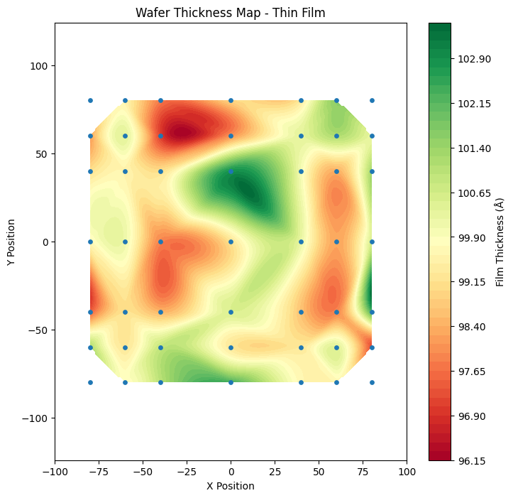

Wafer Thickness Map

결과 해석 · 공정 관점
웨이퍼 좌표별 박막 두께를 등고선으로 표시한 결과입니다. 중심·에지 또는 특정 방향의 두께 변화는 증착 균일도와 공정 조건을 점검할 단서가 됩니다.
박막 공정에서 웨이퍼 위치별 측정 데이터를 시각화하여 중심부와 가장자리의 공정 편차 및 공간적 균일도를 분석한 프로젝트입니다.
증착 공정에서는 평균 두께만 확인하는 것보다 웨이퍼 전체에서 두께가 얼마나 균일하게 형성되는지를 함께 확인하는 것이 중요합니다.
측정값을 단순 표 형태로 확인하는 대신 X/Y 좌표를 이용하여 실제 웨이퍼 형태로 배치함으로써 위치에 따른 공정 특성을 직관적으로 확인하도록 구성했습니다.
웨이퍼 중심으로부터의 거리를 계산하여 Center 영역과 Edge 영역의 박막 특성을 비교할 수 있도록 했습니다.
이를 통해 평균값만으로는 확인하기 어려운 방사 방향의 공정 편차를 공간적으로 확인할 수 있습니다.
Wafer Map의 색상 및 위치별 측정값을 이용해 박막 두께가 특정 영역에 집중되거나 Edge 방향으로 변화하는지를 확인하도록 분석했습니다.
박막 공정의 균일도는 웨이퍼 전체의 최대·최소 측정값과 평균값을 이용해 정량적으로 평가할 수 있습니다.
웨이퍼 가장자리에서 두께 편차가 반복적으로 발생한다면 Edge Effect 또는 공정 가스 분포와 같은 위치 의존적 원인을 검토할 수 있습니다.
중심부에 측정값이 집중되는 패턴이 나타난다면 가스 유동, 온도 분포 또는 장비 내부의 공간적 공정 조건을 추가적으로 확인할 수 있습니다.
평균 두께와 표준편차만 확인하는 것보다 Wafer Map을 함께 사용하면 공정 이상이 발생한 위치와 방향성을 빠르게 파악할 수 있습니다.
Wafer 좌표 계산 및 Thin Film 분석 코드는 GitHub Jupyter Notebook에서 확인할 수 있습니다.
View Notebook on GitHub →실제 Jupyter Notebook에서 실행한 Wafer Map 및 분석 결과입니다.
실제 분석 결과 보기 →아래 그래프는 해당 Python 노트북에서 실제 실행되어 저장된 출력입니다.

결과 해석 · 공정 관점
웨이퍼 좌표별 박막 두께를 등고선으로 표시한 결과입니다. 중심·에지 또는 특정 방향의 두께 변화는 증착 균일도와 공정 조건을 점검할 단서가 됩니다.